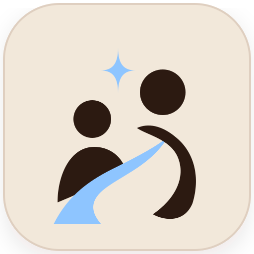
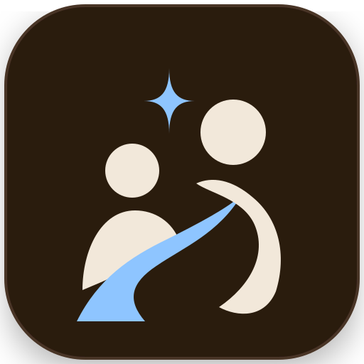
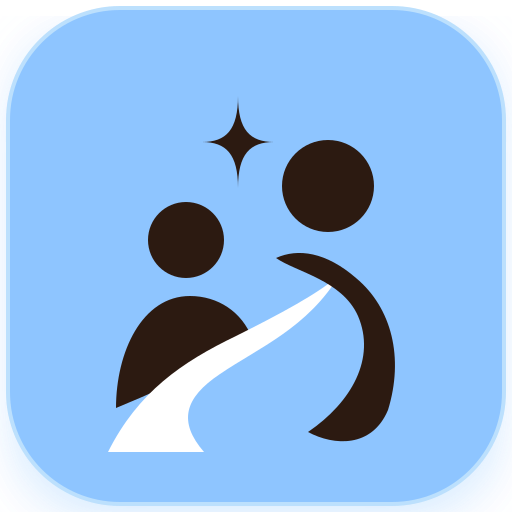
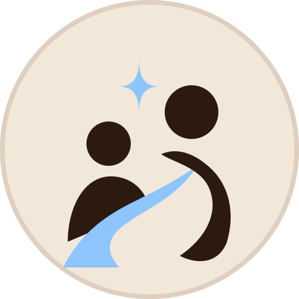
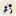
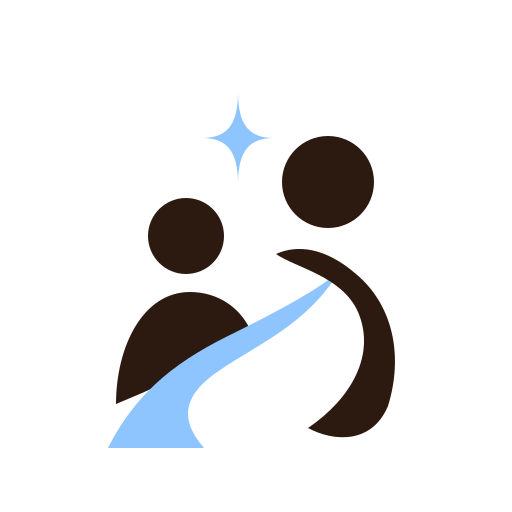

سیستم آیکون مستقل و فاویکان پیرو (Peyroo)
توسعه هندسه برداری مستقل بر اساس طرح نهایی و تایید شده، بهینهسازی شده برای بالاترین وضوح در ابعاد کوچک (16px، 32px، 64px)، آیکون اپلیکیشن، تصویر پروفایل و فاویکان مرورگر، همراه با انتقال کامل برداری به فیگما.
نشان کامل رسمی پیرو (لوگو و نامواره)
نماد هدف غایی، الهام و چشمانداز معماری که بالاتر از منتی میدرخشد.
فیگور چپ؛ در حال یادگیری و آغاز مسیر مهندسی با نگاه رو به بالا.
جریان سیال آبی رنگ؛ بستر انتقال دانش، مستندات ADR و بازخورد پیوسته.
فیگور راست و افراشتهتر؛ با قوس حامیانه که منتی و مسیر را در بر میگیرد.
خانواده آیکونهای مستقل (Standalone Icon Suite)




وضوح در ابعاد خرد (Favicon & Micro-Scale Testing)

در اندازه ۱۶ پیکسل، ستاره قطبی تقویت شده و شکاف بین سر و تنه عریضتر نگه داشته شده تا عناصر روی هم نلغزند.
شعاع انحنای سوپربیضی (Squircle) با استانداردهای اپل و گوگل همگام است و حاشیه امن ۱۵٪ را رعایت میکند.
منتور مصطفی سدیدی یادداشت تصمیم معماری (ADR) نشست شما را ثبت کرد.
رنگ پسزمینه کرم گرم و پیکرههای کاکائویی در کنار آبی آسمانی، در بنرهای روشن و تاریک سریعاً قابل تشخیص است.

فهرست نودهای فیگما و فایلهای محلی مخزن
| نام دارایی (Asset) | ابعاد مبنا | شناسه نود در فیگما (Node ID) | مسیر در پروژه (Local Path) |
|---|---|---|---|
| نشان مستقل برداری (Standalone Mark) | 512 × 512 px | 1:2 | assets/brand/peyroo_icon_standalone.svg |
| آیکون اپلیکیشن کرم (App Icon Cream) | 512 × 512 px | 1:9 | assets/brand/peyroo_app_icon_cream.svg |
| آیکون اپلیکیشن دارک (App Icon Dark) | 512 × 512 px | 1:18 | assets/brand/peyroo_app_icon_dark.svg |
| آیکون اپلیکیشن آبی (App Icon Blue) | 512 × 512 px | 1:27 | assets/brand/peyroo_app_icon_blue.svg |
| تصویر پروفایل مدور (Profile Avatar) | 512 × 512 px | 1:36 | assets/brand/peyroo_avatar_profile.svg |
| فاویکان رتینا (Favicon 32px) | 32 × 32 px | 1:50 | assets/brand/peyroo_favicon_32.svg |
| فاویکان استاندارد (Favicon 16px) | 16 × 16 px | 1:60 | assets/brand/peyroo_favicon_16.svg |